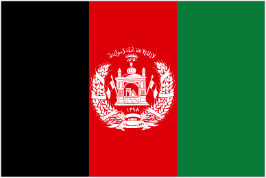
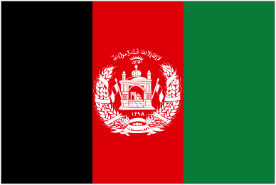
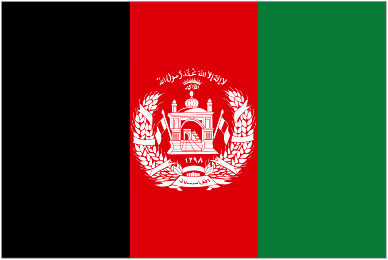

Roch Marc Christian Kaboré is a Burkinabé politician and banker and the President of Burkina Faso, in office since 2015. Previously he served as the Prime Minister of Burkina Faso between 1994 and 1996 and President of the National Assembly of Burkina Faso from 2002 to 2012.
Born: 25 April 1957 (age 63 years), Ouagadougou, Burkina Faso
Spouse: Sika Bella Kaboré (m. 1982)
Education: University of Burgundy
Party: People's Movement for Progress
Presidential term: 29 December 2015 –
Parents: Antonine Kaboré, Charles Bila Kaboré
NIGERIA
Muhammadu Buhari
Muhammadu Buhari GCFR is a Nigerian politician currently serving as the President of Nigeria, in office since 2015. Buhari is a retired military general of the Nigerian Army and previously served as military head of state from 1983 to 1985, after taking power in a military coup d'état.
Born: 17 December 1942 (age 77 years), Daura, Nigeria
Office: Federal Minister of Petroleum Resources of Nigeria since 2015
Children: Yusuf Buhari, Zahra Buhari, Fatima Buhari
Books: The military class, political class, and the quest for good governance in Nigeria
Education: US Army War College (1979–1980)
Previous offices: President of Nigeria (1983–1985), Governor of the Northeastern State (1975–1976)

AFGHANISTAN
Ashraf Ghani
Ashraf Ghani is an Afghan politician who is serving as the President of Afghanistan. He was first elected on 20 September 2014 and was re-elected in the 28 September 2019 presidential election. He was announced the winner after a protracted process in February 2020 and was sworn in for a second term on 9 March 2020.
Born: 19 May 1949 (age 71 years), Logar, Afghanistan
Nationality: Afghan
Spouse: Rula Ghani (m. 1975)
Education: American University of Beirut (1969–1973)
Children: Mariam Ghani, Tarek Ghani
TANZANIAN
John Magufuli
John Pombe Magufuli, is a Tanzanian politician and the fifth President of Tanzania, in office since 2015. He is also the chairman of the Southern African Development Community.
Born: 29 October 1959 (age 60 years), Chato, Tanzania


 
